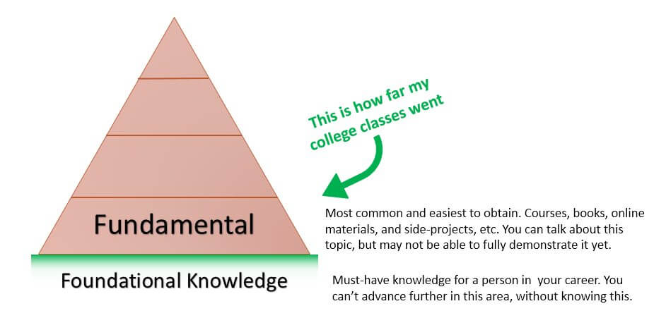
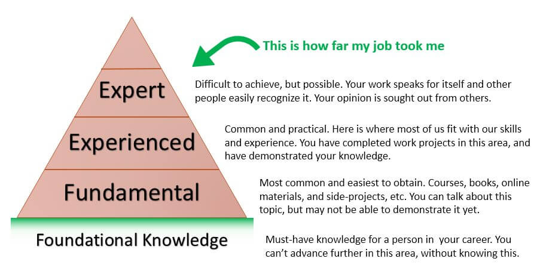
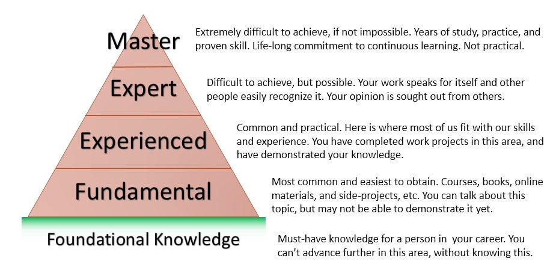

What I learned 4 years after College
( 8 min read )
Its been just about four full years after graduating with a Bachelor’s degree in Computer Science. I graduated in Dec 2012 and started working at a Fortune 500 technology company the following month.
I’ve learned much in four years of college classes, but I’ve also learnt even more in four years of working afterwards. Its arguably a different kind of learning in nature and serves a different purpose.
Four Years of Classes
In college, you focus on the grades, exams, and homework. The topics and broad range of subjects open your mind and tickle your interests that you didn’t know you had. Which could explain why many people change majors–like me! I started out in Engineering and switched to Computer Science after I discovered C programming. I fell in love with code! I had no idea that someone could do such a thing, for a living. And I might have never found that, if my (liberal-arts based) university had not required the course work to graduate. (Its also how I found philosophy to be so darn fascinating).
The classes you take help build the foundation for learning. They do not give you the particular skills to jump into debugging production issues or develop new business logic for an application. Its not relevant at these early stages. Those Computer Science classes give you the base-layer of the “Pyramid of Knowledge”. Not the complete package.
In college, you learn things like:
- Computer logic, Data structures, and Binary
- Object-Oriented Programming ( Java / C / C++ )
- SQL Databases / Relational data tables
- Operating Systems basics

If you’re a student now… this will help put things into perspective. You won’t graduate college and magically be a fit Web Developer, C++ Programmer, or System Administrator. You still, and very much are, learning to be one. You’ll have that base-layer of knowledge with the scaffolds and pulleys ready to build the next layer of solid skills to become that developer or engineer you want to be.
Four Years of Projects
Out in the real world, working a “9 to 5” job, your focus is on the deliverables, deadlines, and your personal marketability. As a programmer, you’re forced to adapt to technologies as your company demands. Its always part of the job. Instead of learning the rules of Object-Oriented Programming and utilizing inheritence or polymorphism, I was taught the rules of Dev/Test/Prod environments and user-acceptance testing. I learned the practical skills and knowledge to build, test, and deploy applications in the enterprise world. The four years of “college knowledge” played a small part in these tasks. I knew that programs ran on computers and utilized RAM, storage, and iterative loops to complete their functions. But I didn’t know the bigger picture of what the heck was going on, or even why it was done this way. The layers of intricacy and expansive array of pieces being utilized….well… it just blew my mind.
In the workplace, you learn things like:
- Packaging, roll-outs, hot-fixes, and deployments
- Sprints, iterations, sandbox, UAT, and environments
- Frameworks, libraries, and licenses
- Configs, batch jobs, scripts, and procedures
- Business logic (Worthy of its own bullet point, for sure!)
- Networking, firewalls, DMZs, DNS, shared servers, and server administration
- Authentication, AD, ACL, SSO, and managing groups/user access
- … and much more!
Work projects help cement your knowledge in the mid-layer of the “Pyramid of Knowledge”. They build on top of your foundational knowledge, with practical skills and experience, forming a taller (more refined) pyramid shape.

I definitely struggled at first. One of my first projects I had to develop a Java EE web application capable of searching through 2 million PDF documents on a document storage server. It had to play nice with a currently existing vendor product using Microsoft SQL Server, as well as the DB2 indexed storage of users documents and favorites. I had to learn Struts2 framework as well as our company’s internal design framework for HTML/CSS. The application also had to follow the same rules as other internal applications and use the LDAP AD for authentication of the users. It was very, very daunting. I had a strong imposter syndrome during the 3 months of developing the application, but I forced myself to adapt to the requirements I was given with that project. I researched and followed guides online for Struts2, DB2, and LDAP. I surprised a lot of people, and our clients loved the end product. Looking back at how crazy and complex as it was, I wouldn’t change a thing.
Completing the Pyramid
As you grow and learn more, your pyramid will begin to take shape. It won’t look like much in the beginning but you will have what it takes to build on top of your efforts, very soon. I think the peak of the pyramid is impossible to achieve; to master your knoweldge in an area. In the IT world where disruptive technologies are born every 6-months to a year, its near-impossible or flat-out impossible to master anything. But you can be darn close to a master of say, Java programming, if you try. But you might have to specialize it in say, Java version 1.7 core edition. Then its not so impossible anymore.

This “Pyramid of Knowledge” is just an oversimplification of the idea, that there is always more to learn. You never really reach the peak, and complete your learning. There is always more! Especially in technology and computers. Some folks will try to become a “Jack of All Trades” and learn many broader areas and master none of them. Their pyramid would look more like a short, but long wall. Where they have lots of fundamental knowledge, but little experience or expertise. But don’t get me wrong, there is nothing wrong with that. Its all about you. What do you want to learn? (i.e. Coding, Operating Systems, Networks, Websites, Servers, Security…) How are you willing to learn? (College courses, online training, self-taught, during work hours, after work, open-source, or hobbies…) And how much are you willing to learn? Are you going to specialize in this area? Or just learn enough to get the job done? It all depends on you.
Just remember this; You never really stop learning after college. Do you?
Four years after graduating, and I’m still being surprised on a regular basis. It. is. amazing.
Published: Nov 21, 2016
Category: workplace